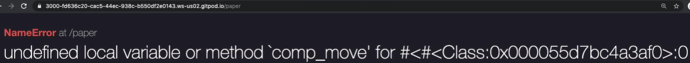

12.12 Video Segment: Embedded Ruby in the Controller with Instance Variables
Notes:
- time stamp 00:44:27 to 00:54:20
- moving conditional control flow
<% if ... %>from /rock into theApplicationControlleractionplay_rock - local variables vs. instance variables with
@-notation
Now that we are RCAV pros, let me show you another (perhaps better, depending on your taste) way of writing our embedded Ruby code. Let’s return to the game_templates/user_rock.html.erb file:
<!-- app/views/game_templates/user_rock.html.erb -->
<h2>We played rock!</h2>
<% comp_move = ["rock", "paper", "scissors"].sample %>
<h2>
They played <%= comp_move %>!
</h2>
<% if comp_move == "rock" %>
<h2>We tied!</h2>
<% elsif comp_move == "paper" %>
<h2>We lost!</h2>
<% elsif comp_move == "paper" %>
<h2>We won!</h2>
<% end %>{: mark_lines=“5”}
The highlighted code <% comp_move = ["rock", "paper", "scissors"].sample %> is okay, but you could imagine that in a real application there may be dozens of lines of code to prepare the information that we actually want to show the user. Our example is trivial. In reality we may lookup data from a database, doing math on it, finding API data, and more. Think of our “take your umbrella” example BENP: insert link to this DarkSky API example; but wait, has it even been presented up to this point?, which took around 30 lines of Ruby code to produce. We want somewhere other than the HTML template to put this code.
We can in fact do that!
Let’s go back to the game_templates/user_paper.html.erb file, since we didn’t get as far there and see how we can make this modification. We would like our file to look like this:
<!-- app/views/game_templates/user_paper.html.erb -->
<h2>
We played paper!
</h2>
<h2>
They played <%= comp_move %>!
</h2>
<h2>
We <%= outcome %>!
</h2>{: mark_lines=“7-13”}
We wish we could just do this and avoid all the lines of embedded Ruby that are in the previous user_rock.html.erb view template. The responsibility for these computations really don’t belong here, the view templates should be given some data and then the job should just be to format and present it beautifuly and usably to the user. In the backend the responsibility should be marshalling the correct data and sending it to the view template.
We can return to our app/controllers/application_controller.rb controller file and do the following:
# app/controllers/application_controller.rb
class ApplicationController < ActionController::Base
layout(false)
# Add your actions below this line
# ================================
def homepage
render({ :template => "game_templates/rules.html.erb" })
end
def play_rock
# write your code here
# redirect_to("https://www.wikipedia.org")
# render({ :html => "<h1>Hellow, world!</h1>".html_safe })
render({ :template => "game_templates/user_rock.html.erb" })
end
def play_paper
comp_move = ["rock", "paper", "scissors"].sample
if comp_move == "rock"
outcome = "won"
elsif comp_move == "paper"
outcome = "tied"
elsif comp_move == "scissors"
outcome = "lost"
end
render({ :template => "game_templates/user_paper.html.erb" })
end
end{: mark_lines=“23-31”}
In the above highlighted code we have removed all of the embedded Ruby tags (<% %> and <%= %>) from the code we had in the .html.erb view template. Now when a user visits the route http://[YOUR APP DOMAIN]/paper, the action play_paper in the controller ApplicationController will be triggered, and the code will be run before the template is rendered.
So let’s try to visit http://[YOUR APP DOMAIN]/paper again. Oops, we get this error:

In our game_templates/user_paper.html.erb view template, when we get to the first embedded Ruby tag:
<!-- app/views/game_templates/user_paper.html.erb -->
<h2>
We played paper!
</h2>
<h2>
They played <%= comp_move %>!
</h2>
<h2>
We <%= outcome %>!
</h2>{: mark_lines=“8”}
That local variable comp_move is undefined! A local variable only exists in the scope it was defined. If I create a local variable in a loop, it will only exist in that loop. If I want some variable available outside the loop, then I would need to create it outside the loop and modify it in the loop. So there’s a scope to local variables and I can’t just use it in my template if I created it in the play_paper method (action). The variable is effectively “dead” after play_paper executes.
So how do we make the controller variables available in the view template? Let’s modify our app/controllers/application_controller.rb:
# app/controllers/application_controller.rb
class ApplicationController < ActionController::Base
layout(false)
# Add your actions below this line
# ================================
def homepage
render({ :template => "game_templates/rules.html.erb" })
end
def play_rock
# write your code here
# redirect_to("https://www.wikipedia.org")
# render({ :html => "<h1>Hellow, world!</h1>".html_safe })
render({ :template => "game_templates/user_rock.html.erb" })
end
def play_paper
@comp_move = ["rock", "paper", "scissors"].sample
if @comp_move == "rock"
@outcome = "won"
elsif @comp_move == "paper"
@outcome = "tied"
elsif @comp_move == "scissors"
@outcome = "lost"
end
render({ :template => "game_templates/user_paper.html.erb" })
end
end{: mark_lines=“23 25-30”}
All we did was place an @ symbol before any variable that we want access to in our view template. This is a new kind of variable called an instance variable. This type of variable will survive as long as the instance the object in which its created survives BENP: last sentence a bit confusing. In this case when someone visits /paper, Rails is going to create an instance of the ApplicationController class and then run the play_paper method. So as long as the ApplicationController instance is alive (Rails keeps it until the response is sent to the user), the variables produced by play_paper will exist.
When someone visits /paper, we now have @comp_move and @outcome available for our template. We just need to make sure those instance variables are also properly referenced in game_templates/user_paper.html.erb:
<!-- app/views/game_templates/user_paper.html.erb -->
<h2>
We played paper!
</h2>
<h2>
They played <%= @comp_move %>!
</h2>
<h2>
We <%= @outcome %>!
</h2>{: mark_lines=“8 12”}
Again, we just use the leading @ symbols on our variables to tie them to the instance variables in the controller. And if we visit the /paper URL, it works! And we have a much improved organization.
Most computation work like this should go in the controller as we have done it here. We will have cases where embedded Ruby goes in the template (e.g., rendering database records with each loops, if statements to check if a user is allowed to see something, other conditional statements). If it can happen in the controller, it should happen there.
Time for a rails grade and a /git commit!